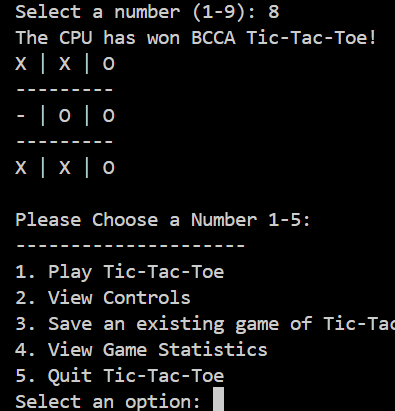
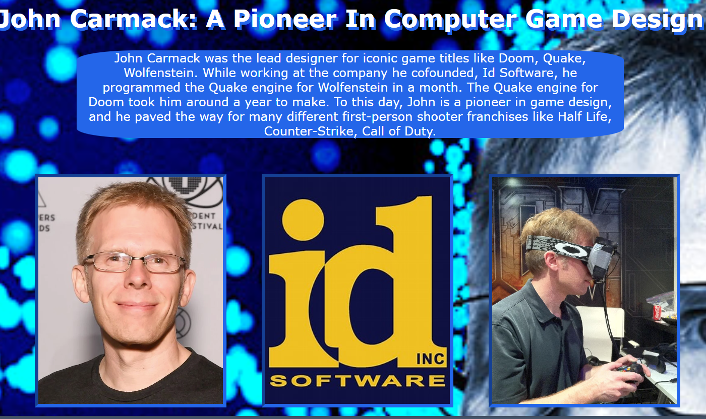

For my first unit project, I recreated the traditional Tic-Tac-Toe game in Python. The user can choose an "X" on any spot of the board, and the CPU selects a random spot to place an "O." Additional features include saving player statistics, saving games to a file, and viewing game controls.



For my G.O.A.T project in unit 3, I chose John Carmack and explored his impact on the video game industry. This project allowed me to experiment with various HTML and CSS features like backgrounds and margins for the first time.